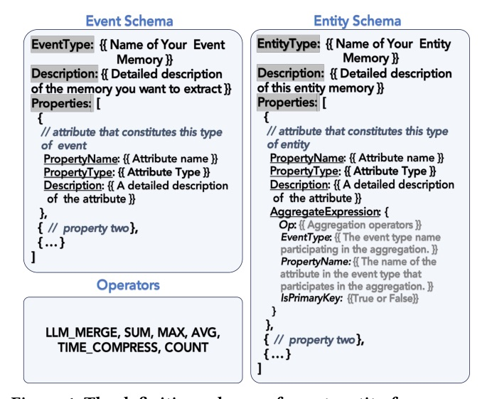
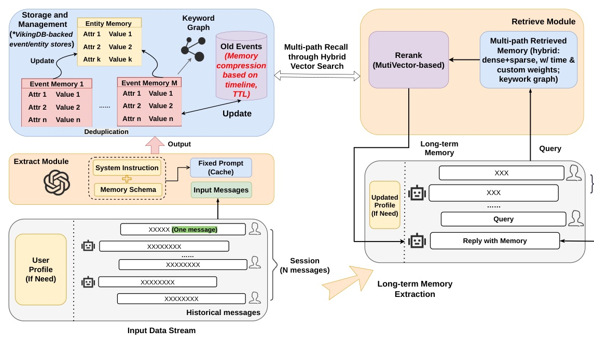
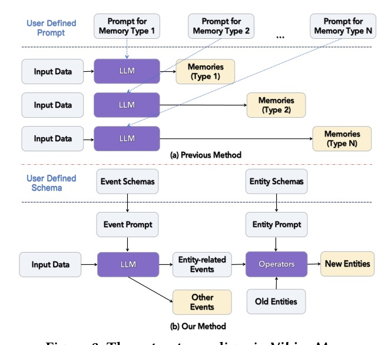
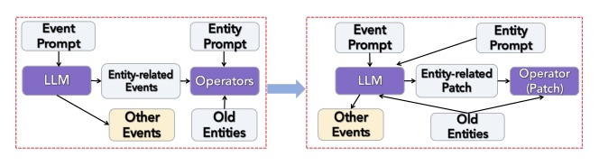
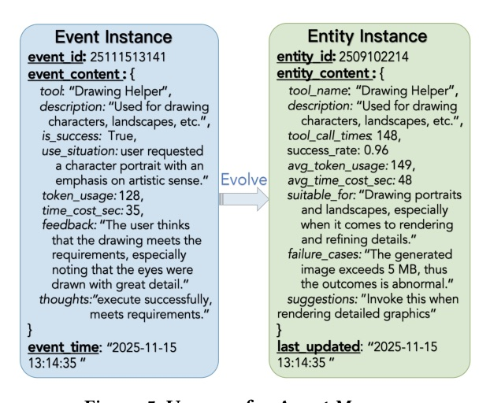

Long-term LLM memory is treated as a database problem: Events become logs, Entities become materialized state, and retrieval becomes a latency-bounded query plan.
The important move is not merely "better vector search". VikingMem changes the unit of memory, lifecycle, and ranking objective.

entity := SELECT OP(event.content)
FROM Events WHERE filters(event)
GROUP BY keys(event)
Changing keys, filters, and OP materializes user profiles, tool memories, SOPs, learning progress, or recommendations from the same Event log.



| Operator | Role | Why it matters |
|---|---|---|
| SUM / COUNT / AVG / MAX | Numerical aggregation | Avoids LLM arithmetic failure and token cost |
| LLM_MERGE | Textual merge / conflict resolution | Evolves qualitative entity state |
| TIME_COMPRESS | Topic timeline + lazy merge + TTL | Keeps recent detail, summarizes old inactive memories |

| Dataset | Scale | Task focus |
|---|---|---|
| LOCOMO | 10 conversations, 1000+ messages each | QA with single-hop, multi-hop, temporal, open-domain |
| LongMemEval_s | 500 conversations, avg ~115,000 tokens | Multi-session reasoning, memory updates, preferences |
| Setting | VikingMem | Strong baseline | p95 |
|---|---|---|---|
| LOCOMO / GPT-4o-mini | 88.83 | Mirix 78.66 | 0.39s |
| LOCOMO / GPT-4.1-mini | 90.12 | Full-context 86.36 | 0.39s |
| LongMemEval / GPT-4o-mini | 66.36 | Zep 63.21 | 0.89s |
| LongMemEval / GPT-4o | 75.80 | Zep 70.40 | 0.89s |
The biggest gain comes from creating denser memories, not from merely ranking noisy chunks harder.
IMSM has the largest ablation drop (-5.32 points) with ~0 search-latency impact because it works offline at ingestion.
| Technique | Cost($) | Time(s) | Score |
|---|---|---|---|
| Multiple Prompts | 0.35 | 11.02 | 88.86 |
| One-pass w/o EUA | 0.11 | 12.32 | 88.83 |
| One-pass w/ EUA | 0.07 | 7.42 | 88.77 |
| Method | Stored tokens | LLM-Judge score |
|---|---|---|
| Naive RAG | 100% baseline | 63.81 |
| VikingMem | 16.82% (-83.18%) | 75.80 |
| Scenario | MAX | AVG | LLM_M | TIME_C |
|---|---|---|---|---|
| Education | 90% | 96% | 91% | 26% |
| Agent Memory | 96% | 98% | 98% | 42% |
| Social Comp. | 16% | 32% | 100% | 72% |
"we introduce the Memory Base, a novel data management paradigm to manage the persistent state of long-term interactions."
作者把 LLM memory 問題重新定位為「長期互動的持久狀態管理」問題，而不是單純向量檢索。Abstract p.1
"VikingMem treats the event store as a generic log and the entity store as a family of materialized views over that log."
Event 是可查詢日誌，Entity 是物化視圖；這是整篇最像資料庫系統的抽象。§2.2.2 p.4
"one-pass extraction substantially improves cost efficiency ... the extraction cost drops from $0.35 to $0.11 ... EUA further ... decreasing ... to $0.07."
schema-driven one-pass + patch-style EUA 把抽取成本從 $0.35 壓到 $0.07，品質幾乎不變。§5.3 / Table 2 p.11
"VikingMem retains only the extracted events and entity snapshots, reducing the total storage footprint to just 16.82% of the original size."
保留高密度 Events/Entities，而不是全量 raw log；這是 83.18% storage reduction 的來源。§5.4 / Table 3 p.11
"Its removal triggered the most severe performance drop ... 88.83 -> 83.51."
IMSM 是最大的品質槓桿，證明「切對 memory unit」比單純換 reranker 更根本。§5.5.2 / Table 4 p.11
Today’s useful lens: do not ask a context window to behave like a database.